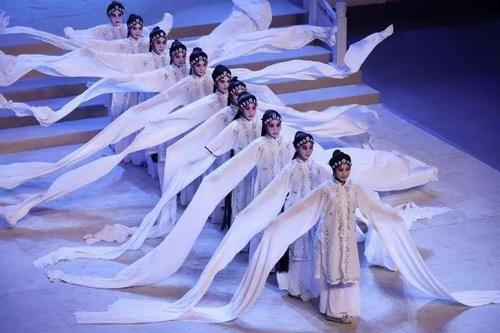

水袖
耍水袖是川剧旦角的基本功之一，对表达人物的思想感情和创造优美的舞蹈身韵有重要的作用。按川剧服装的传统规制，旦角水袖原本较短，且以白布做成，除穿宫装与苦褶子的角色外，较少使用，因而耍水袖的技法并不复杂。新中国成立后，随着旦角行表演艺术的发展，水袖由仅露袖头加长到2尺5寸，并改用轻柔的白绸制作，使用范围也突破原来的限制，而得到广泛地运用，只要剧情需要，无论是传统戏或新编戏中的女性角色，也不管是青衣、正旦、花旦或鬼狐旦，都可使用耍水袖的技巧。因此，耍水袖的技法也愈来愈丰富。
古人云，“长袖善舞”，故川剧中水袖的设置主要是为了舞蹈、为了表演、为了美化，为的是夸张地表达人物激动、悲愤、痛苦等复杂的思想感情和心理活动。
它时而像团团花絮，时而像行云流水，时而像波浪涟漪；有的形状像车轮，有的形状像托塔；有单摆转盘袖，有正侧重叠转盘袖，有直冲展翅飞卷袖等等。
水袖舞蹈身段、动内作姿态多达数百种，其基本功有“冲、理、舞、抓、甩、缠、转、分、飞、勾、挑、撑、拨、扬、甩、抱、掸、抖、回、扔平、拖、捧、打、反转、双背、反掌、风摆、抱肩、还胸、双举、整鞋、遮头、抱腮、搭肘”等水袖动作。